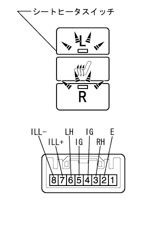

Seat Heater Switch Inspection |
| 1. Measure Resistance |
 |
Seat Heater Switch Inspection
Using SST (Toyota electrical tester), measure the resistance between each terminal.
| Tester Connection (Terminal Symbol) | Condition | Standard |
|---|---|---|
| 4(IG) - 3(RH) | RH side ON | Below 1 Ω |
| 4(IG) - 3(RH) | RH side OFF | 10 kΩ or higher |
| Tester Connection (Terminal Symbol) | Condition | Standard |
|---|---|---|
| 5(IG) - 6(LH) | LH side ON | Below 1 Ω |
| 5(IG) - 6(LH) | LH side OFF | 10 kΩ or higher |
Indicator Inspection
Check that the indicator comes on when the battery is connected between each terminal of the seat heater switch.
| Tester connection (terminal symbol) Battery positive (+) - Battery negative (-) | Condition | Specified Condition |
|---|---|---|
| 4(IG) - 2(E) | RH side ON | Illuminated |
| Tester connection (terminal symbol) Battery positive (+) - Battery negative (-) | Condition | Specified Condition |
|---|---|---|
| 5(IG) - 2(E) | LH side ON | Illuminated |
Illumination Inspection
Check that the illumination comes on when the battery is connected between each terminal of the seat heater switch.
| Tester connection (terminal symbol) Battery positive (+) - Battery negative (-) | Condition | Specified Condition |
|---|---|---|
| 7(ILL+) - 8(ILL-) | Always | Illuminated |